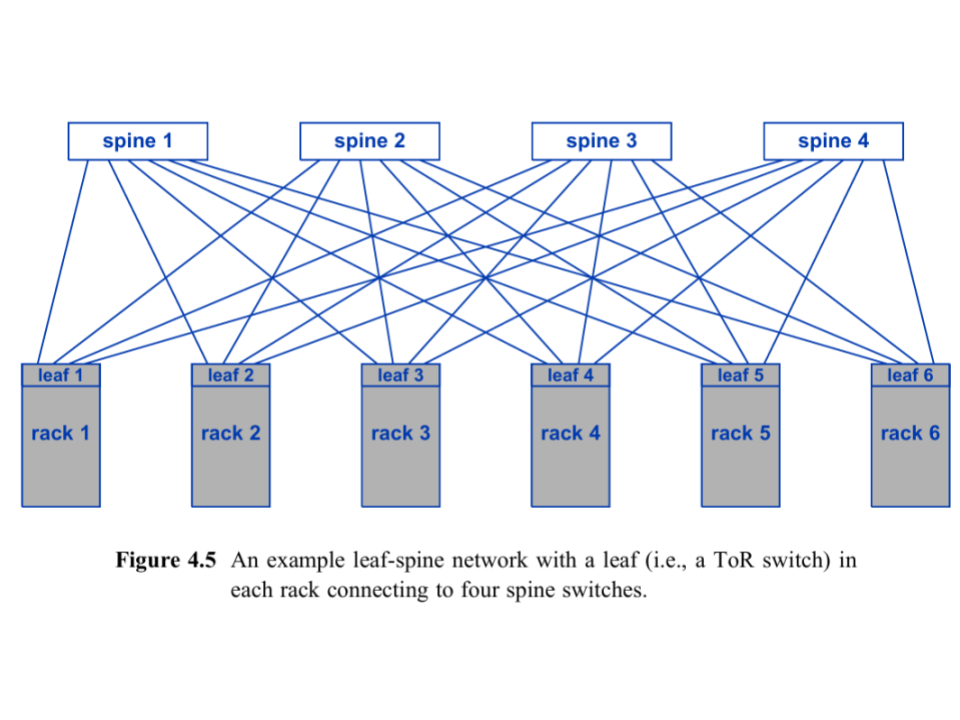
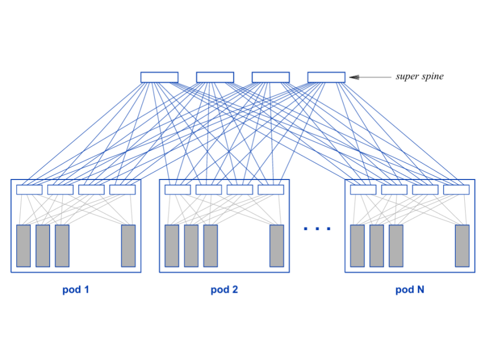

Regular expressions (regex) are patterns used to search, match, and manipulate text.
They allow you to describe rules for text in a concise way, making them useful for tasks
like validating input, searching logs, extracting data, or performing find-and-replace operations.
Using Regex in Python: Python provides the "re" module for working with regex.
import re
pattern = r"\d+"
text = "There are 24 apples"
match = re.search(pattern, text)
if match:
print("Found:", match.group())
For hands-on practice, I highly recommend the interactive exercises on RegexOne.
They provide clear explanations and progressively challenging problems to make learning regex easier.
Understanding how and where the CPU begins is crucial for low-level programming and OS design. The following is a simple
breakdown of that process.
Step 1 - CPU Startup: When powered on, a CPU (Intel, AMD, etc.) immediately begins executing
instructions at a fixed reset vector (e.g., 0xFFFF0).
Step 2 - Firmware Mapping: BIOS/UEFI manufacturers (AMI, Phoenix, etc.) write firmware that lives in
read-only memory (ROM/flash). Motherboard manufacturers wire the hardware so that this firmware is mapped to the
CPU's reset vector. This electrical mapping is what makes the firmware appear exactly where the CPU expects it
when the system powers on.
Step 3 - Hardware Initialization and Bootloader: Once running, the BIOS/UEFI firmware performs POST (Power-On Self-Test),
verifying that the CPU, RAM, storage devices, and essential motherboard components are present and functioning
correctly before searching for a bootable device.
Step 5 - Kernel Handoff: When found he bootloader loads the operating system kernel into RAM and jumps to its
entry point. At this moment, control transfers from firmware to the operating system, and the CPU begins executing
kernel code.
In modern IT environments, storage solutions are critical for data access, performance, and management.
Two common architectures are Network Attached Storage (NAS) and Storage Area Network (SAN).
While both provide centralized storage, they differ in how they serve data and how clients interact with it.
Network Attached Storage (NAS):
NAS is designed for file-level access. It serves files over a network to multiple users and devices.
It is ideal for shared file storage, backups, and collaborative environments.
NAS commonly uses NFS (Network File System), originally developed by Sun Microsystems, to allow clients to access files over the network.
Storage Area Network (SAN):
SAN works at the block level, providing clients with virtual disks called LUNs (Logical Unit Numbers).
Each LUN defines a virtual partition of a physical disk, giving clients more control over their storage.
SAN is typically used in environments that require high performance and scalable storage for databases, virtualization, and enterprise applications.
Connectivity Options for SAN:
iSCSI - Transfers block-level data over an existing IP network.
Pros: lower cost, uses existing infrastructure
Cons: slower than dedicated channels
Fibre Channel - Uses a dedicated network for high-speed block-level transfers.
Pros: high performance, low latency
Cons: higher cost, requires specialized hardware
Quick Comparison:
• NAS -> File-level access, simple setup, good for collaboration
• SAN -> Block-level access, high performance, suitable for enterprise applications
For deeper learning, check out SNIA SAN Resources and Red Hat NAS Guide.
In modern data centers, the leaf-spine network architecture is commonly used to improve performance, scalability, and redundancy.
It handles large amounts of east-west traffic efficiently.
Basic Leaf-Spine Diagram:

This shows leaf switches (Top-of-Rack) connecting to all spine switches, creating multiple paths for traffic and redundancy.
Key Components:
Leaf switches - Top-of-Rack switches connecting servers.
Spine switches - Backbone switches connecting all leaf switches.
Advantages:
- Higher capacity for east-west traffic using multiple paths and ECMP.
- Redundant paths for fault tolerance; if one spine fails, traffic reroutes through others.
Scaling with Super Spine:

For very large data centers, a super spine layer connects multiple spine switches to each pod of leaf switches, allowing tens of thousands of racks to scale efficiently.
For more explanations see Cisco Leaf-Spine Guide.